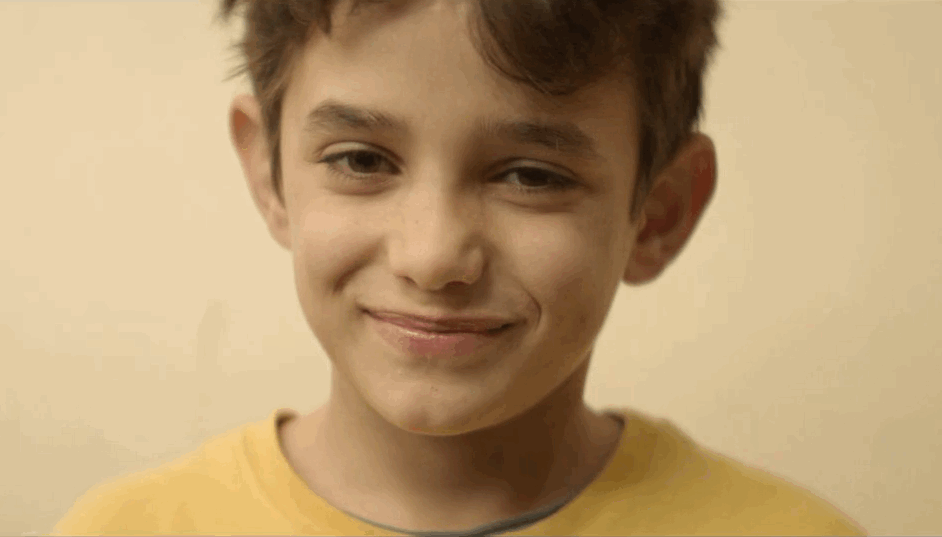

白的建站实例
《何以为家》 
前往三体网站！
前往Terraria私人服务器！（跳转网址为ip:端口）
密码是qingdaobeer（已设置可四个人一起玩耍，没测试多人游戏的稳定性，预计3月15号关闭服务器）
开源书库 BOOKDOWN "Write HTML, PDF, ePub, and Kindle books with R Markdown"
奇克资讯网 “开源的中文科技信息交流和新闻平台”
Slashdot "A website based on and running the Slashdot-Like Automated Story-Telling Homepage software"
前往博科园（非博客园）
咖啡因、光照、睡眠、视交叉上核，nature communication 关于腺苷对睡眠调节机制的文章解读
前往我的邮箱